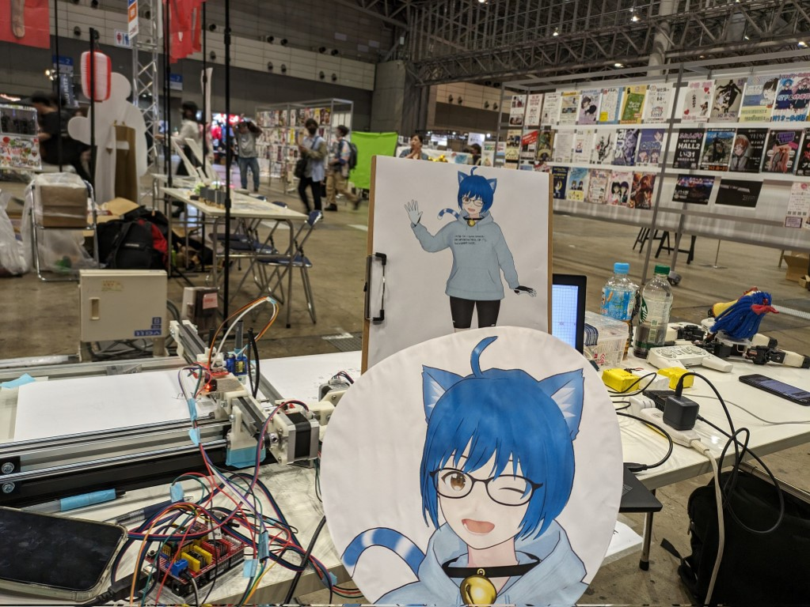

作るに夢中、 三峰スズです！
Hi, I'm Mitsumine Suzu, driven by the fun of making!
三峰スズは電子工作、3Dプリンター、プログラミング、各種DIYなどを楽しむ、Tech&DIYなVTuberネコ人間です！
「なければ作ろう、すでにあっても自分で作ろう！」をモットーに、いろんな「作る」に挑戦していきたいです！
シンボルマーク： 🔔🛠️ (Bell, Hammer and Wrench)
ハッシュタグ： #suzu3tsu （年齢制限のあるコンテンツは #suzuhi3tsu ）
誕生日: 10月15日
活動開始: 2023年2月
メインコンテンツ
- ものづくり・製作動画
- 電子工作 はんだづけ配信
- プログラミング配信
- Vlog
- ゲーム動画・配信
グループ： #特化Vの会 ( #特化勢VTuber )、#作るV、#VirtualProgrammersNetwork (VPN; Virtual Programmer's Network)
3Dプリンター: BambuLab A1 mini, Creality Ender-2
CAD: SolveSpace, Autodesk Fusion, FreeCAD, KiCAD
情報処理安全確保支援士 試験合格（現在は非登録）
プログラミング言語
- C/C++ - おもにマイコン/IoTのファームウェアの実装
- C# - Unity、WPFのデスクトップアプリ
- Python - 自作ツール、機械学習
- Verilog - FPGAでCPU実装など
- Rust - 学習中
- RISC-Vアセンブリ言語
リンク / Links
実績紹介 / Portfolio
自己紹介動画
ぽんぽこ24 Vol.7にてCM採用
マイコンCH32V003ハンズオン
日本での販売も始まった新しいマイコンチップをいちはやく紹介
[PR] BTO ケーブルチェッカー紹介
ビット・トレード・ワンさまの商品PR
[PR] フルカラーPCBで名刺を製作
JLCPCBさまのサービスPR
オリジナルマイコンボード
Suzuduino UNO
視聴者さんと交流しながら設計したマイコンボードを紹介。
BOOTHにて頒布中
配信アプリVCamStreamの紹介
ニコニコ公式番組「あつまれ！ばーちゃる！」
ピックアップ動画

XR Kaigi 2023 クリエイター出展
実写とVTuber表現の融合を試みる
VCamStreamの実演展示
ニコニコ超会議 2024 技術部
クリエイタークロス出展

ビット・トレード・ワンさま 商品PR
ニコニコ公式番組「あつまれ！ばーちゃる！」動画ピックアップ
【CAD & 3Dプリンタ】ヘッドフォンアンプ基板のケースを作ろう！
NT東京 出展
2023年： Suzuduino UNO、ペンプロッター
2024年： Suzuduino UNO / Suzuno32RV、ロボットアームなど
技術書典 出展
15(2023年 秋), 16(2024年 春), 17(2024年 秋)
PRや案件の依頼 / PR & Commissions
電子工作の部品やキット、サービス、デジタル機器などのPRの依頼もお待ちしています！ PR以外の案件もぜひご相談ください！
企業さまだけでなく、キット等を頒布している個人さまもぜひ！
三峰スズの強み
- 「電子工作系VTuber」という希少な存在で、それ自体が情報として際立つ
- VTuberカルチャーに基づくコンテンツの製作と露出は、視覚的にも雰囲気的にも目立つ
- 商品・サービス特性をよく理解して、説明できる
- 一般層だけでなく、技術に関心の強い「濃い」客層にリーチできる
- 技術に関心のある層との共感が得られる
- リアルイベントにも参加可能で、PRの形態の自由度が高い
開発・コーディングもご相談ください！
これまでの実績は 実績紹介 / Portfolio で紹介しています。
ご相談は 連絡先 / Contact まで。Twitter上での公式アカウントからのダイレクトメッセージで最初のご連絡をいただけるとスムーズです。
製作した商品・同人誌 / Products
ギャラリー / Gallery
Comming soon.
サポート・支援のお願い / Support Me
いつも応援ありがとうございます！以下の方法でもサポートしていただけますので、ぜひご検討ください。
FANBOX
https://suzu3tsu.fanbox.cc/
継続的な支援ができます。
Amazon ほしいものリスト
YouTubeスーパーチャット・スーパーサンクス
YouTubeの配信でのスーパーチャット、動画コメントでのスーパーサンクスが利用できます。
ガイドライン / Guideline
二次創作ガイドライン： https://suzu3tsu.fanbox.cc/posts/7114502
連絡先 / Contact
Twitter (@verylowfreq) のダイレクトメッセージへお願いします。またはEメール verylowfreq あっと gmail.com も可能です。